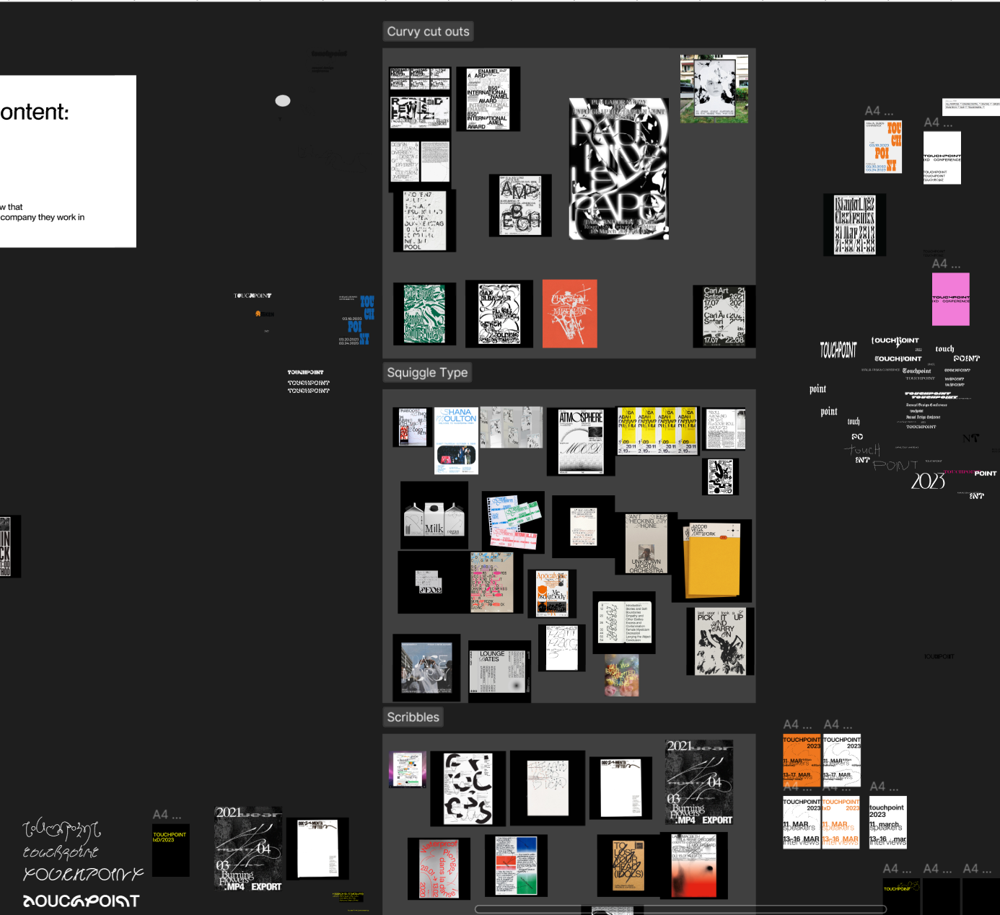

ART DIRECTION
Our process for this process was quite straightforward as we were thight on time.For our art direction we decided to leverage the foreground and background direction. Implementing this, we used a faded colored text for as the static background and a brownish colored text as the forground which when scrolled is on top of the background. Before we got to thsi point, we did a considerably number of image grouping to get a clear sense of our direction.
Screenshot of image grouping